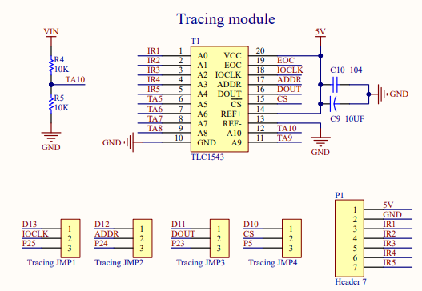
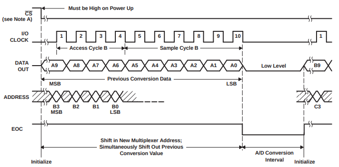

TLC1543
Este robot no nos lo pone fácil con el siguelíneas ¿Por qué? Porque los 5 sensores (IR1..IR5) están conectados a un conversor analógico digital TLC1543 tal y como puedes ver en su esquema eléctrico:

¿Cómo está conectado con GPIO?
Pues con estos números:
- CS en GPIO 5
- Clock en GPIO 25
- Address en GPIO 24
- DataOut en GPIO 23
¿Cómo funciona este chip?
Pues léete su manual de instrucciones 🥱🥱😴 aburrido ¿verdad?
Te lo resumimos :
- Este chip se activa por nivel bajo del CS.
- En ese momento LEE LA DIRECCIÓN definida por ADDRESS (empezando por el bit más alto MSB) donde ADDRESS es un número entre 0 y 4 en binario que corresponde canal o sensor infrarrojo que se quiere leer A0 hasta A4 (que corresponden a los sensores IR1 hasta IR5).
- Los primeros 4 pulsos de CLOCK son para leer ADDRESS (en el flanco de subida). En la ilustración Accesss Cycle B.
- Los otros 6 no valen para nada. En la ilustración Sample Cycle B.
- Los siguientes 10 pulsos se emite por DATAOUT (empezando por el bit más alto MSB) el valor leído del sensor de infrarojos que has seleccionado en ADDRESS. En la ilustración Previous Conversion Data, es decir, está sacando la conversión de los valores leidos anteriormente que no están en la ilustración.
Mentirijillas: Realmente el punto 4 no es verdad, lo que pasa es que si has leido el punto 5 durante los 10 pulsos de reloj está sacando la lectura del IR definido por ADDRESS de los 10 anteriores. Lo que es verdad es que la primera lectura de todas, esos 6 pulsos no valen para nada.

Los 4 primeros pulsos de reloj por flanco de subida leen ADDRESS: B3 B2 B1 y B0 mientras tanto por DATAOUT está sacando los valores A9..A0 definido en una anterior ADDRESS que no vemos (los 10 primeros pulsos de CLOCK no tiene sentido esos valores de DOUT).
Los rayados significan que igual da lo que haya pues no lo lee. Por ejemplo entre el pulso 5 y 10 del rejoj, no se está leyendo ADDRESS.
Si te fijas, en los siguientes 10 pulsos de CLOCK (sólo aparece el primer pulso) ya empieza a salir por DATAOUT los valores del sensor definidos en ADDRESS como B3B2B1B0.
Entre 10 pulsos de reloj y los otros 10 se necesita un tiempo de conversión A/D Conversion interval.

Rover Marciano Alphabot por Javier Quintana Peiro bajo licencia Creative Commons Reconocimiento-NoComercial-CompartirIgual 4.0 Internacional License.